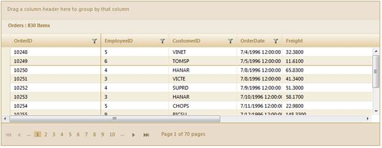
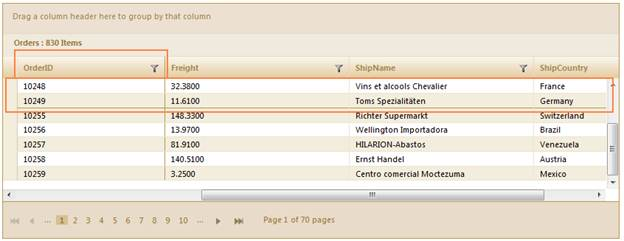

When scrolling the grid content, some columns and rows should be locked, similar to freeze panes in Microsoft Excel. This is quite useful when you want to make a part of the data (in columns/rows) visible to end users at all times.
Use Case Scenarios
Users can freeze rows and columns to the left or top of the grid so that they are always visible when scrolling through a grid with a large number of rows or columns.
Sample Link
To view the samples:
1. Open the sample browser and select ASP.NET MVC from the left-hand panel.
2. Click Run samples to launch the ASP.NET MVC sample browser.
3. Select Grid from the product icons in the bottom-left of the screen.
4. Select Rows and Columns>Frozen rows and columns to launch the sample.
Freezing Grid Rows/Columns in an Application
Through GridBuilder
To freeze the rows and columns in the grid using GridBuilder:
1. Create a model in the application (Refer to Getting Started>Adding a Model to the Application).
2. Create a strongly typed view (Refer to How to>Strongly Typed View).
3. Create the Grid control in the view and configure the properties.
4. Set the number of rows that need to be frozen using the FrozenRows method.
5. Set the number of columns that need to be frozen using FrozenColumns method.
6. Scrolling can be enabled using EnableScrolling method. The Grid width should be less than the total columns width.
|
View [ASPX]
<%=Html.Syncfusion().Grid<Order>("Grid1") .FrozenRows(2) .FrozenColumns(1) .EnableScrolling()
.Scrolling(scroll => scroll.Height(150).Width(535))
columns.Add(p => p.OrderDate).Width(200).Format("{0:dd-MM-yyyy}");
|
|
View [cshtml]
@{ Html.Syncfusion().Grid<Order>("Grid1") .FrozenRows(2) .FrozenColumns(1) .EnableScrolling()
.Scrolling(scroll => scroll.Height(150).Width(535))
columns.Add(p => p.OrderDate).Width(200).Format("{0:dd-MM-yyyy}"); }
|
7. Set its data source and render the view.
|
[C#]
/// <summary>
|
8. Run the application. The grid will appear as displayed in the following screenshot:

Figure 275: “OrderID” Column and First Two Rows Frozen
Figure 276: “OrderID” Column and First Two Rows Visible after Scrolling
Through GridPropertiesModel
To freeze the rows and columns in the grid using GridPropertiesModel:
1. Create a model in the application (Refer to Getting Started>Adding a Model to the Application).
2. Add the following code in the Index.aspx file to create the Grid control in the view.
|
View [ASPX]
<%=Html.Grid<Order>("Grid1","GridModel", columns => { columns.Add(p => p.OrderDate).Width(200).Format("{0:dd-MM-yyyy}"); })%>
|
|
View [cshtml]
@{
Html.Grid<Order>("Grid1","GridModel", columns => { columns.Add(p => p.OrderDate).Width(200).Format("{0:dd-MM-yyyy}"); }).Render(); }
|
3. Create a GridPropertiesModel in the Index method. Use the Localize property to specify the culture details.
|
[C#] public ActionResult Index() { DataSource = new NorthwindDataContext().Orders, Caption = "Orders", AutoFormat = Syncfusion.Mvc.Shared.Skins.Sandune, FrozenRows = 2, FrozenColumns = 1, Width = 635, Height = 150, AllowScrolling = true };
|
4. Run the application, the grid will appear as shown in the following screenshot:
Figure 277: “OrderID” Column and First Two Rows Frozen

Figure 278: “OrderID” Column and First Two Rows Visible after Scrolling
Tables for Properties, Methods, and Events
Properties
|
Property |
Description |
Type |
Data Type |
|
FrozenRows |
Gets or sets the number of rows that need to be frozen. Scrolling should be enabled. |
Server side |
Integer |
|
FrozenColumns |
Gets or sets the number of columns that need to be frozen. Scrolling should be enabled and grid width should be less than the total columns width. |
Server side |
Integer |
|
EnableScrolling
|
Indicates whether scrolling is enabled or not. |
Server Side |
Boolean |
Methods
|
Method |
Description |
Parameters |
Type |
Return Type |
|
FrozenRows |
Gets the number of rows that need to be frozen. Scrolling should be enabled. |
(int frozenRows) |
Server-side |
Void |
|
FrozenColumns |
Gets or sets the number of columns that need to be frozen. Scrolling should be enabled and grid width should be less than the total columns width. |
(int frozenColumns) |
Server-side |
Void |
|
EnableScrolling
|
Indicates whether scrolling is enabled or not. |
No Arguments |
Server-side |
Void |
|
set_frozenRows
|
Gets the number of rows that need to be frozen. Scrolling should be enabled. |
(int frozenRows) |
Client-side |
Void |
|
set_frozenColumns
|
Gets or sets the number of columns that need to be frozen. Scrolling should be enabled and grid width should be less than the total columns width. |
(int frozenColumns) |
Client-side |
Void |
|
freezePanes
|
Keep the rows and columns visible while Grid scrolls based on the current selection. |
No Argumnets |
Client-side |
Boolean |
|
unFreezePanes
|
Unlock all rows and columns to scroll through the entire grid. |
No Arguments |
Client-side |
Void |
 Freezing Panes
Freezing Panes